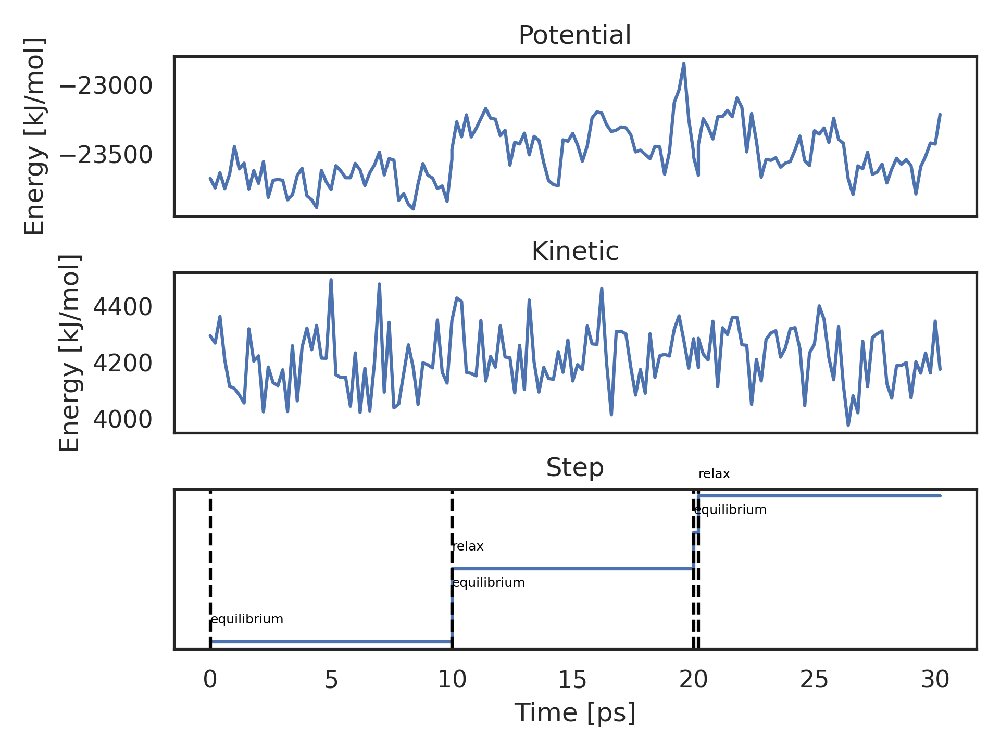
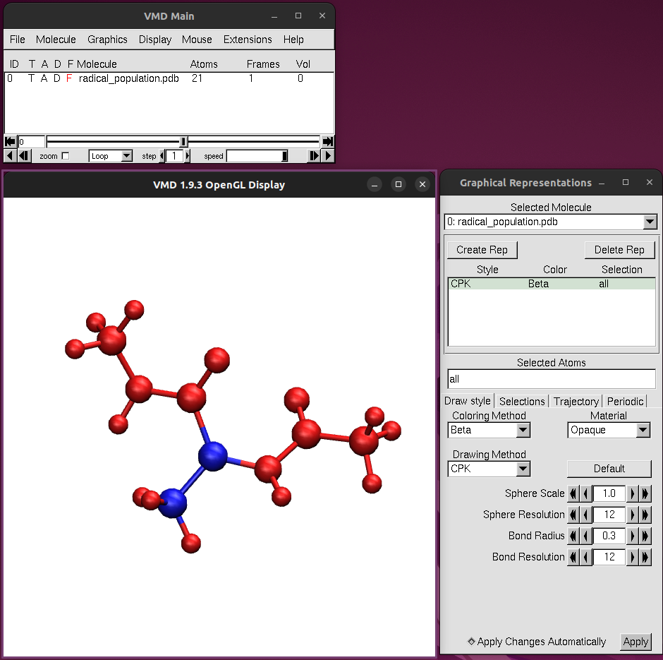
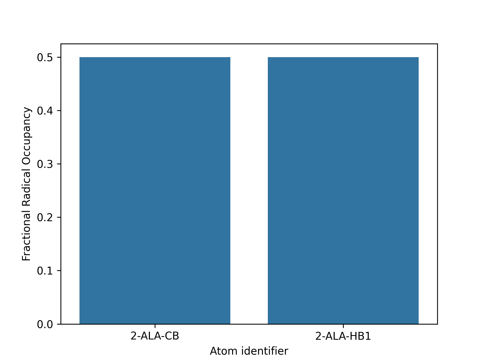
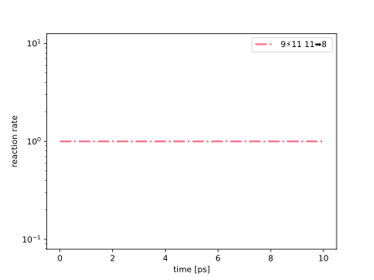

Get Started
In this tutorial we will be simulating hydrogen atom transfer in a simple ACE/NME-capped Alanine molecule in a box of water.
Installation
Prerequisites
python3.9or highergromacs(tested with version 2021.4,gmxshould be available in thePATH)
Optional:
plumed-patched version ofgromacs(for the homolysis reaction).
If you plan to use our machine-learning plugins, take a look at the full installation instruction
Let’s first create a directory and a virtual environment for kimmdy:
mkdir kimmdy-tutorial
cd kimmdy-tutorial
python -m venv .venv
source .venv/bin/activateTo install KIMMDY, the builtin reaction plugins and the analysis tools use
pip install kimmdy[reactions,analysis]Setup the Simulation
Download and unzip the input files to this directory.
wget https://hits-mbm-dev.github.io/kimmdy/guide/tutorials/getting-started-files/setup.zip
unzip setup.zipThe kimmdy.yml file should look like this:
kimmdy.yml
dryrun: false
max_tasks: 100
name: 'hat_tf_000'
gromacs_alias: 'gmx'
top: 'Ala_out.top'
gro: 'npt.gro'
ndx: 'index.ndx'
mds:
equilibrium:
mdp: 'md.mdp'
relax:
mdp: 'md_slow.mdp'
changer:
coordinates:
md: 'relax'
reactions:
hat_reaction:
frequency_factor: 100000000
h_cutoff: 3
polling_rate: 1
sequence:
- equilibrium
- mult: 2
tasks:
- equilibrium
- reactionsOur starting structure is a simple ACE/NME-capped Alanine molecule in a box of water. Note, how it has a missing hydrogen atom on the alpha carbon. This is a radical. We will use the builtin hat_reaction to simulate hydrogen atom transfer reactions from nearby hydrogens to the radical position.
Start the KIMMDY run with the kimmdy command:
Run the Simulation
kimmdyYou can also run kimmdy directly from python with
from kimmdy.cmd import kimmdy_run
kimmdy_run()KIMMDY parses your topology to generate its internal representation and writes out a new topology to be used in future steps. This topology includes everything gromacs needs to run the simulation, including forcefield parameters. KIMMDY combines all moleculetypes that are meant to take part in reactions into one moleculetype named “Reactive”. It also makes multiples explicit (e.g. 10 molecules of a peptide), such that each reactive atom has a unique representation. You can always find this topology in the output directory for the kimmdy setup task, e.g. alanine_hat_000/0_setup/<name-of-your-top.top. By default, everything that is not a solvent or ion is considered reactive. To exclude or include certain moleculetypes from this (e.g. in a lipid bilayer simulation), check out the topology.reactive options in the input file documentation. You can find another example of merging topologies in the topology explanation.
Analyse the Simulation
Concatenate the trajectories from the individual steps into one for viewing:
kimmdy-analysis trjcat alanine_hat_000 --open-vmdCheck the energy of the system:
kimmdy-analysis energy alanine_hat_000 --open-plot --terms Potential Kinetic
Visualize where the radicals end up:
kimmdy-analysis radical_population alanine_hat_000 --open-plot --open-vmdIn VMD, color the atoms by beta factor to show the radical occupancy.


Plot the reaction rates:
kimmdy-analysis rates alanine_hat_000In the alanine_hat_000/analysis directory you will then find a plot of rates for each possible reaction at every step they were queried, e.g.

Or do all of the above directly from python:
from kimmdy.analysis import concat_trj, plot_energy, radical_population, plot_rates
concat_trj('alanine_hat_000', open_vmd=True)
plot_energy('alanine_hat_000', terms=['Potential', 'Kinetic'], open_plot=True)
radical_population('alanine_hat_000', open_plot=True, open_vmd=True)
plot_rates('alanine_hat_000')Congratulations, you have successfully run your first KIMMDY simulation!